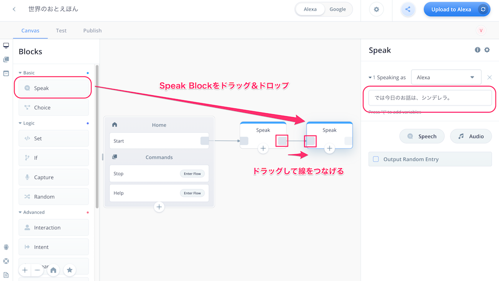
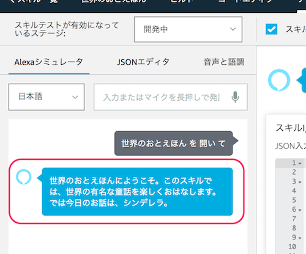

はじめに

本資料は、「Voiceflowハンズオン＆ワークショップ：インタラクティブな物語スキルを作ろう」のハンズオン用資料になります。
アカウントのセットアップなど事前準備は以下をご覧ください。
- Voiceflowハンズオン: アカウントのセットアップ手順
https://vf-handson-setup.netlify.com/#0
注意
更新履歴
- 2019/11/21 公開
ではNextをクリックしてください
本日皆さんに作っていただくスキルは「シンデレラ」のお話です。

皆さんもよくご存知のこのストーリーを以下のような工夫をすることで、楽しくインタラクティブなAlexaスキルにします。
- サウンドや効果音をたくさん使ってにぎやかな感じにします。
- 登場人物のキャラクターごとに声を使い分けます。
- 単にお話を聞くだけではなくて、ユーザの発話を元にストーリーが進んだり分岐したりします。
スキルの全体はこういう感じになっています。

- 全８シーンで構成されています。
- ブロックの数は多いですが、使っているブロックの種類は少ないです。
- スムーズに進むようにコピペ用テキストを用意してます。
- ポイントとなるところは詳しく説明します。
- ご自宅に帰ってから実際に動かしてみたり、中身を確認できるように完成したものをダウンロードできるようにしておきます。
ボリュームありますが、がんばっていきましょう！
Nextをクリックしてください。
プロジェクトの作成
最初にプロジェクトを作成して、かんたんにVoiceflowの画面の説明を行います。
以下のURLにアクセスしてください。
https://voiceflow.com/
右上の"Log in"をクリック。

アカウント作成した際のメールアドレスとパスワードを入力して"Sign in"をクリックします。

プロジェクトの一覧画面が表示されます。Default Listと書いてあるところの一番下の"Create Project"をクリックします。
プロジェクト作成画面が開きますので、以下の通り設定して、最後に"Create Project"をクリックします。
- プロジェクト名
- 今回は「世界のおとえほん」と入力してください。
- スキルを呼び出すときのデフォルトの名前になります。（例：「アレクサ、◯◯◯を開いて」）
- 後でプロジェクト名と呼び出し名のそれぞれを変更することも可能です。
- 言語: "English(US)"のチェックを外して、"Japanese(JP)"にチェック

プロジェクトが作成されると"Canvas"画面が表示されます。"Canvas"画面がVoiceflowでスキルを作成する基本画面になります。
- 最初から用意してあるHome Blockの中にあるStartがスタート地点になります。
- 左のBlocksメニューにいろんな機能のBlockが用意されています。ここからBlockを選択してCANVAS上に配置します。
- CANVASに配置したBlockの設定を行い、アレクサに発話させたり、ユーザの発話を受け取ったりします。
- Block同士を線でつなげることで、会話の流れがつながっていきます。
- アップロードボタンをクリックすると、作成したプロジェクトがAlexa開発者コンソールにアップロードされ、Amazon Echoなどで呼び出せるようになります。
- Blocksメニュー以外にもいくつか別のメニューがありますが、後で説明します。
では早速やってみましょう。
CANVASとBlock
Voiceflowでは、いろんな機能を持ったBlockをCanvasに配置して線をつなぐことで、会話の流れを作ることになります。試しに少しやってみましょう。
左のBlocksメニューの一番上にある"Speak"というブロックを、最初から配置してあるHome Blockの右側あたりにドラッグ＆ドロップで配置してください。すると、画面の右側に別の設定画面が出てくると思います。

この設定画面の右上の入力欄に以下と入力してみてください。
世界のおとえほんにようこそ。このスキルでは、世界の有名な童話を楽しくおはなしします。
そして、Home BlockのStartの右端からSpeak Blockの左端までドラッグしながら線でつなげます。
はい、これが基本的な操作になります。かんたんですよね？おさらいでもう一つSpeak Blockをつなげてみましょう。
- 最初に配置したSpeak Blockの右側にもう一つSpeak Blockを配置します。
- Speak Blockの設定画面の入力欄に以下を入力します
では今日のお話は、シンデレラ。 - Speak Block同士を線でつなげます。

２回目なのでもう大丈夫ですよね。ちなみに、線を引き直したい場合は、線の始点側のブロックの四角をクリックするか、線の真ん中にカーソルを合わせると表示されるバケツアイコンをクリックすると消せます。

では作ったスキルを実際に動かしてみたいと思います。
スキルのアップロードとテスト
作成したスキルを動かすにはAlexa開発者コンソールへのアップロードが必要です。右上の"Upload to Alexa"というボタンをクリックしてください。
初回に限り、VoiceflowアカウントとAlexa開発者アカウントの紐付けが必要になります。"Connect Amazon"ボタンをクリックしてください。
Amazonアカウントのログイン画面が出てきますので、お持ちのAmazonアカウントでログインします。

VoiceflowからAmazonアカウント経由でAlexaスキル作成等の許可を求める画面が出てきますので、「許可」をクリックします。これでアカウントの紐付けは完了です。

アップロードが行われます。100%になるまで待ちます。
100％になって"Upload Successful"と表示されればアップロード完了です。ではAlexa開発者コンソールでテストしましょう。"Test on Alexa Simulator"をクリックしてください。

Alexa開発者コンソールのログイン画面が表示されたら、Amazonアカウントでログインしてください。

Alexa開発者コンソールのテストシミュレータ画面が表示されます。作成したスキルはここでほぼ実機と同じようにテストができます。

なお、この時、左上のところで「非公開」が選択されていた場合は「開発中」に変更します。

テストは文字だけでなく音声でも行なえます。まず最初にマイクを有効にしておきましょう。「許可」をクリックします。

ではいよいよテストです。「日本語」が選択されていることを確認して、マイクアイコンをクリックしたままマイクに「音絵本を開いて」と話しかけて、話し終わったら話してみてください。パソコンにマイクがない場合は、キーボードから入力してENTERキーを押してください。
あなたの発話に対して、Voiceflowで設定した内容をAlexaが返してくれればテストは成功です！これでスキル開発の第一歩を踏み出したことになります！おめでとうございます！

このように、Voiceflowでスキルを作成 → Alexa開発者コンソールにアップロード → Alexa開発者コンソールでテスト、というのがVoiceflowでのスキル開発の流れになります。
効果音やサウンドを使う（その１）
物語に大事なのは臨場感ですよね！サウンドを効果的に使うことでスキルを楽しいものにすることができます。そしてAlexaやVoiceflowでもサウンドを使ったスキルを作ることができます!ここではサウンドの使い方にトライしてみましょう！
サウンドの使い方は以下の３通りがあります。
- 「Alexa Skills Kitサウンドライブラリ」を使う
- mp3ファイルをVoiceflowにアップロードする
- mp3ファイルのURLを指定する
ここでは、２番めのmp3ファイルアップロードやってみましょう。
mp3ファイルをVoiceflowにアップロードする
自分で作成した効果音や、フリーで配布されているmp3ファイルなどをアップロードして、スキル内で再生することができます。今回はサンプルとして多数の効果音素材を公開されている「効果音ラボ」様のものを使用させてもらいましょう。
- 以下のURLをクリックしてみてください。
https://soundeffect-lab.info/sound/anime/ - 上記ページにある「きらきら輝く５」をダウンロードしてください。
ではアップロードしましょう。２番めのSpeak Blockの設定を開いて、先程入力した発話の下にある"Audio"をクリックしてください。
オーディオの設定が表示されますので、先ほどダウンロードしてきたmp3ファイルを、図の四角の中にドラッグ＆ドロップします。
以下のように表示されれば正しくアップロードされています。再生ボタンを押すとその場で聞けます。

はい、ではアップロードして確認してみてください。Alexaが話したあとに効果音が聞こえてくればオッケーです！かんたんですね！
これでシーン０は終了です。次のシーンに行きましょう！
"Next"をクリックしてください
さぁ、ここからはいよいよ、物語を作っていきましょう。シーン１のイメージはこんな感じです。
むかしむかし、あるところにシンデレラというとても美しくて優しい娘がいました。シンデレラの両親は早くに亡くなってしまったので、今は継母と二人のお姉さんと暮らしていました。ところが、この人たちは大変な意地悪で、
お姉さん１
「シンデレラ、さっさと掃除を終わらせなさいよ。」
お姉さん２
「シンデレラ、掃除が終わったら次は洗濯よ、怠けないでやるのよ。」
シンデレラに家事を全部押しつけた上、
ママ母
「ふん、あんたにはこのボロがお似合いだわ。」
と、粗末な服しか与えてもらえず、シンデレラは毎日つらい日々を送っていました。
そんなある日の事、お城の王子様がお妃選びの舞踏会を開く事になり、シンデレラのお姉さんたちにも招待状が届きました。お姉さんたちは大はしゃぎできれいなドレスに着替えて準備をしています。
ママ母
「そうそう、シンデレラ、あんたも仕事が終われば、舞踏会に来てもいいわ、ただそのボロボロの服でも来れるなら、だけどね。あっはっは。」
そう言い残して、お母さんとお姉さんたちはでかけていきました。
シンデレラ
「ああ、わたしも舞踏会に行きたいわ。でもこんなボロボロの服じゃとても王子さまにお会いできないわ、しくしく」
声を変える
ではやっていきましょう。
Speak Blockをおいて以下のように入力します。
むかしむかし、あるところにシンデレラというとても美しくて優しい娘がいました。シンデレラの両親は早くに亡くなってしまったので、今は継母と二人のお姉さんと暮らしていました。ところが、この人たちは大変な意地悪で、

次はセリフです。Alexaスキルでは、何も設定しなければ"Alexa"という名前の女性の声で喋りますが、この声を変えることができます。早速やってみましょう！
"Speech" をクリックします。

すると新しい入力欄が下に出てきますので、以下のように入力してください
シンデレラ、さっさと掃除を終わらせなさいよ。

そして、"Speaking as" の右側のリストから "Mizuki" というのを選択してください。

これでアップロードして試してみてください。声が変わっているのがわかりますか？
このように、声を使い分けることでキャラクターごとにセリフを分けることができます。ちなみに、日本語の場合は、
- Alexa（標準・女性の声）
- Mizuki（女性の声）
- Takumi（男性の声）
から選択することができます。
声の音程とスピードを変える
でもちょっとまってください。シンデレラに出てくる登場人物を考えてみましょう。
- シンデレラ
- ママ母
- お姉さんその１
- お姉さんその２
- 魔法使いのおばあさん
- お城の王子様
- ナレーター
合計７人もいます。音声の切り替えで対応できるのは３人です。あと４人足りませんね・・・・
そんな場合は、声の音程やスピードを変えることで分けてみましょう。「SSML」という、HTMLに似た言語を使うことで「喋り方」を調節することができます。早速やってみましょう。
先程のセリフ部分を以下に置き換えてください。
<prosody pitch="x-high" rate="fast">シンデレラ、さっさと掃除を終わらせなさいよ。</prosody>

発話部分を<prosody>と</prosody>で囲むと、囲んだ部分の発話内容が調節されます。調節する内容は最初の<prosody>内に指定します。pitchで声の高さ、rateで声のスピードを調整できます。
これと最初の音声切り替えを組み合わせることで、複数のキャラクターのセリフを使い分けることができます！今回はこんな感じで各登場人物の声を設定することにします。
登場人物 | 音声 | 音程 | スピード | SSMLタグ |
ナレーター | Alexa | デフォルト | デフォルト | - |
シンデレラ | Alexa | 高い | デフォルト |
|
ママ母 | Mizuki | デフォルト | デフォルト | - |
お姉さん1 | Mizuki | 高い | やや速い |
|
お姉さん2 | Mizuki | 低い | ややゆっくり |
|
魔法使い | Alexa | 低い | ややゆっくり |
|
王子様 | Takumi | デフォルト | デフォルト | - |
ではセリフをも含めてこのシーンの設定をしていきましょう。
"Speech"をクリックして新しい入力欄を追加、お姉さん２のセリフなので、音声は"Mizuki"を選択、発話は以下を入力します。
<prosody pitch="x-low" rate="slow">シンデレラ、掃除が終わったら次は洗濯よ、怠けないでやるのよ。</prosody>
さらに"Speech"をクリックして、ナレーターなので特に設定せずに、以下を入力。
シンデレラに家事を全部押しつけた上、

次はママ母のセリフです。"Speech"を追加して、"Mizuki"を選択して以下を入力します。
ふん、あんたにはこのボロがお似合いだわ。

最後もナレーターなので、"Speech"を追加して、ナレーターなので特に設定せずに、以下を入力。
と、粗末な服しか与えてもらえず、シンデレラは毎日つらい日々を送っていました。<break time="1s"/>。

最後に見慣れないSSMLタグが出てきましたが、これもSSMLタグの一つで、発話の中に何も言わない時間を含めるのに使います。このあと少し話が変わるので、場面の切り替わり的に1秒の空白を入れています。
では続きです。ここで話が少し変わるので、もう一つSpeakブロックを追加して、そちらに設定していきましょう。
そんなある日の事、お城の王子様がお妃選びの舞踏会を開く事になり、シンデレラのお姉さんたちにも招待状が届きました。お姉さんたちは大はしゃぎできれいなドレスに着替えて準備をしています。

"Speech"で、ママ母のセリフを追加します。
そうそう、シンデレラ、あんたも仕事が終われば、舞踏会に来てもいいわ、ただそのボロボロの服でも来れるなら、だけどね。あっはっは。</say-as>

もう一つ"Speech"で、以下を入力します。
そう言い残して、お母さんとお姉さんたちはでかけていきました。
最後にシンデレラのセリフです。シンデレラの声はAlexaのままですが、声を高くします。あと、このあと別のシーンに切り替わるので、<break time="1s"/> も追加しておきましょう。
<prosody pitch="x-high">ああ、わたしも舞踏会に行きたいわ。でもこんなボロボロの服じゃとても王子さまに、お会いできないわ、しくしく</prosody><break time="1s"/>
アップロードしてテストしたいところですが、次のステップをやったあとでテストしましょう。
効果音やサウンドを使う（その２）
効果音やサウンドについては、mp3ファイルをアップする方法を説明しましたが、SSMLでも効果音やサウンドを指定することができます。
そこで活用したいのは「Alexa Skills Kitサウンドライブラリ」です！ Alexaでのスキル開発に活用しやすいように、予めサウンドや効果音が多数公開されています。
以下のURLをクリックしてみてください。
https://developer.amazon.com/ja/docs/custom-skills/ask-soundlibrary.html
少し下に、検索できるような場所があるのがわかるでしょうか？

ここに「ドア」と入力してENTERキーを押すと検索結果が表示されます。ドアだけでたくさんありますね！どれでもいいのですが、今回は「木（２）」というのを使いますので、これをクリックしてみてください。

再生ボタンを押すとサウンドを聞くことができますので、このようにしてお好みのサウンドを探していきます。で、実際にスキルで使うには、この中に表示されているSSMLタグを発話煮含める必要があります。ここの横にある"Copy to clipboard"をクリックして、コピーします。

Voiceflowに戻って、Speak Blockの以下の設定の最後にペースト(WindowsはCtrl+v, Macはcommand+v)してください。これで発話のあとにサウンドが再生されるようになります。

はい、ではいよいよアップロードボタンをクリックしてテストです。キャラクターごとに声やしゃべり方が違って、ドアを閉める音が聞こえれば、シーン1は完成です！
Nextをクリックして次のシーンに行きましょう！
おまけ： 発話の中に空白を入れる
何回か出てきた、<break time="1s"/>、発話の中に何も言わない時間を含めるのに使います。
というのも、Alexaは句読点（、とか。）があれば、その部分をきちんと意識して読み上げてくれますが、発話中に長めの空白を入れたい場合に「・・・」と入力しても理解してくれません。そこで意図的に空白を入れたい場合は、SSMLのbreakタグを使用します。例えば、
「マヤ・・・なんて恐ろしい子」
と言わせたい場合は以下のようにします。
マヤ<break time="0.5s"/>なんて恐ろしい子
どれぐらい空白時間を入れるかは time="" に秒で設定します。例えば、1秒の場合は "1s" となります。また、prosodyタグと違って、breakタグは閉じるタグが必要がないこと、最後に/がつくのを忘れないように、注意してください。
また、Voiceflowで、Speak Blockをいくつか並べた場合、Blockとしては複数に分かれていたとしても、Alexaが発話するときは一気に話されますので、シーンが変わるような場合にはどこかにbreakタグを入れておくと良いと思います。

では次のシーンです。シーン２のイメージはこんな感じです。
シンデレラを舞踏会に連れて行ってあげたいですか？連れて行ってあげたい場合は、シンデレラになりきって、舞踏会に行きたいわ、と言ってください。
ユーザ
「舞踏会に行きたいわ」
（効果音: 魔法の音）
シンデレラが強く願うと、その瞬間、突然、魔法使いのおばあさんが目の前に現れ、こういいました。
魔法使いのおばあさん
「泣くのはおよし、シンデレラ。お前はいつも仕事をがんばるとても良い子じゃ、ごほうびにわたしが魔法で舞踏会へ行かせてあげるとしよう。」
シンデレラ
「本当に？」
魔法使いのおばあさん
「本当じゃよ。見ててご覧。」
魔法を使ってシンデレラを変身させるには、ちちんぷいぷい、か、アブラカダブラ、といってください。
（ユーザの発話内容で分岐）
→ユーザ「ちちんぷいぷい」と言った場合、
魔法使いのおばあさん
「ちちんぷいぷい、えいっ。」
→ユーザ「アブラカダブラ」と言った場合、
魔法使いのおばあさん
「アブラカダブラ、えいっ。」
そういって、魔法使いのおばあさんは魔法の杖を一振りしました。
（効果音：シャラリーン）
すると、畑のかぼちゃが豪華な馬車に、屋根裏のネズミが立派な白馬に、庭のトカゲがパリッとした御者になりました。シンデレラの着ていたみすぼらしい服も、たちまち輝く様な純白の美しいドレスに変わり、そして足元は素敵なガラスのクツになりました。
シンデレラ
「まあ、なんてすてきなの。」
魔法使いのおばあさん
「さあ、楽しんでおいでシンデレラ。でも、わたしの魔法は十二時までしか続かないから、それまでに帰ってくるんじゃよ。」
シンデレラ
「わかったわ、おばあさん、ありがとう、行ってきます。」
（効果音：馬車の音）
ちょっとボリュームがありますが、がんばっていきましょう！
ユーザの発話を受け取る
このシーンでは、ユーザの発話を受け取って、ストーリーが分岐して進む、というのをやってみましょう！
まず、最初にSpeak Blockで、これからユーザに発話させるのを促す内容を話させます。シーンが変わるので少し離した場所に配置しておくのをおすすめします。
シンデレラを舞踏会に連れて行ってあげたいですか？連れて行ってあげたい場合は、シンデレラになりきって、舞踏会に行きたいわ、と言ってください。
次はいよいよユーザの発話の受け取りです。ユーザの発話を受け取るブロックは複数ありますが、もっとも活用の幅が広いInteraction Blockを使いましょう。
Blocksメニューの下の方にAdvancedというサブメニューの中ににある Interaction Block を、2つ目のSpeak Blockの右側にドラッグアンドドロップして、線でつなげてください。

Interaction Blockの設定は３つあり、タブで切り替えて設定します。それぞれのタブで設定する内容は以下となります。
- Choices
- Intentsで設定したインテントに基づいて、会話の流れを分岐させます。
- Intents
- ユーザのしゃべりそうな内容のパターン（「サンプル発話」と言います）をグループ（「インテント」と言います）にまとめることで、分岐の元となるルールを作ります。
- Slots
- ユーザのしゃべる内容の中に含まれるキーワード（「スロット」と言います）を変数として、スキルからプログラム的に利用する場合に使用します。
といっても、ピンとこないと思うので、実際にやってみましょう。まず最初に"Slots"タブをクリックして、"+ Add slots"
次にIntentsタブをクリックして、"+Add Intent"をクリックします。
下に"intent_one"という設定が追加されたと思います。"intent_one"の部分がインテント名になります。

ちょっとわかりにくいので、まずここで、"intent_one"というのをわかりやすく"butoukai_intent"に変えてください。
そして、入力欄に「舞踏会に行きたいわ」と入力してENTERキーを押します。入力欄の下に表示されればOKです！

同様にして、以下をすべて入力します。
舞踏会に行きたい
舞踏会行きたい
舞踏会行きたいわ
舞踏会に行きたいな
舞踏会行きたいな
全部入力し終わってこんな感じになっていればOKです！
では、次にこのインテントを使って分岐をしてみましょう。Choicesタブをクリックして、"Add Choice"をクリックしてください。

すると下に設定項目のようなものが追加されるとともに、Interaction Blockにも線をつなぐための四角が追加されて、同じ番号になっているのがわかるでしょうか？
では設定項目の"Select Intent"をクリックしてください。先程作成した"butoukai_intent"が並んでいるのが見えると思うので、これを選択します。
次にSpeak Blockを２つ、以下のように配置してください。
そして、以下のように線を引きます。1と書かれたところからは右のSpeak Blockへ、elseと書かれたところは上のSpeak Blockにつなげて、そこからさらにInteraction Blockに戻します。

それぞれのSpeak Blockは、以下のように設定します。まず、elseにつながった上のSpeak Block。
ごめんなさい。うまく聞き取れませんでした。シンデレラを舞踏会に連れていってあげるには、舞踏会に行きたい、と言ってください。
次に、1につながった右のSpeak Block。最初にSSMLでサウンドを流していますね。
<audio src="soundbank://soundlibrary/magic/amzn_sfx_fairy_melodic_chimes_01"/>シンデレラが強く願うと、その瞬間、突然、魔法使いのおばあさんが目の前に現れ、こういいました。
2つとも設定ができたら、ここで一度アップロードしてテストしてみましょう。スキルを起動したあと、舞踏会に行きたい、と言うように言われるので、最初に「舞踏会に行きたい」以外のセリフを言って、その後で「舞踏会に行きたい」と言ってください。きちんとそれぞれ分岐していることが確認できるでしょうか？


もうおわかりになられたかと思いますが、Interaction Blockでユーザの発話をインテントに紐付けて、インテントごとに分岐を分けることで、会話のフローが分岐するという仕組みになっているのです。今回はインテントが一つしかないので、そのインテント以外か、
このようにして、物語のところどころでユーザの発話に応じて話が展開するインタラクティブなストーリーが作れるというわけですね！是非積極的に使ってなれていきましょう！
さて・・・これ、気になった方もいらっしゃるかと思います。

この"Else"というのは、用意されているインテントのどれにも合致しない場合に使います。例えば今回だと、桃太郎、シンデレラ、ガリバーの冒険、「以外」のお話をユーザが行った場合などですね。こういう場合は、ユーザに対して、そのお話に対応していないことを伝えて、再度お話を選び直してもらうようにしましょう。
Speak Blockを配置して、以下のようにたすき掛けになるように線をつなげてみてください。

Speak Blockの設定は以下のように入力します。
ごめんなさい、ただしく聞き取れませんでした。今お話できるのは、桃太郎、シンデレラ、ガリバーの冒険、の３つです。３つのどれを聞きたいですか？

これでOKです！テストでうまく動いていることを確認してください。